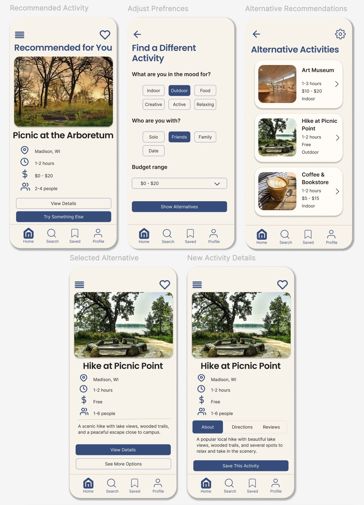
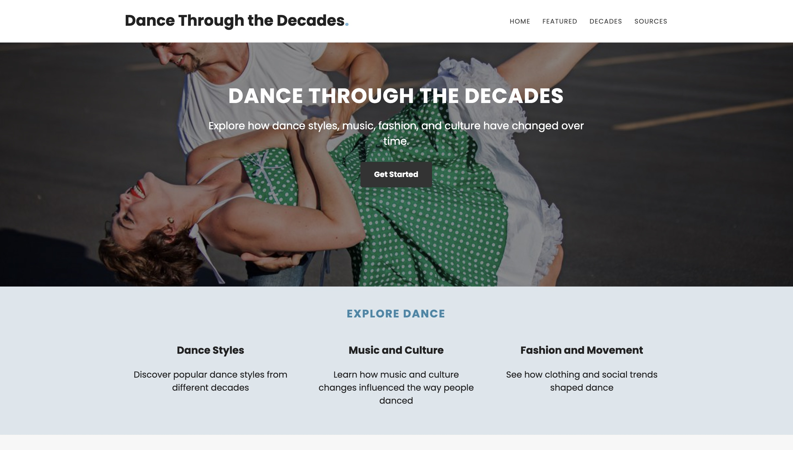
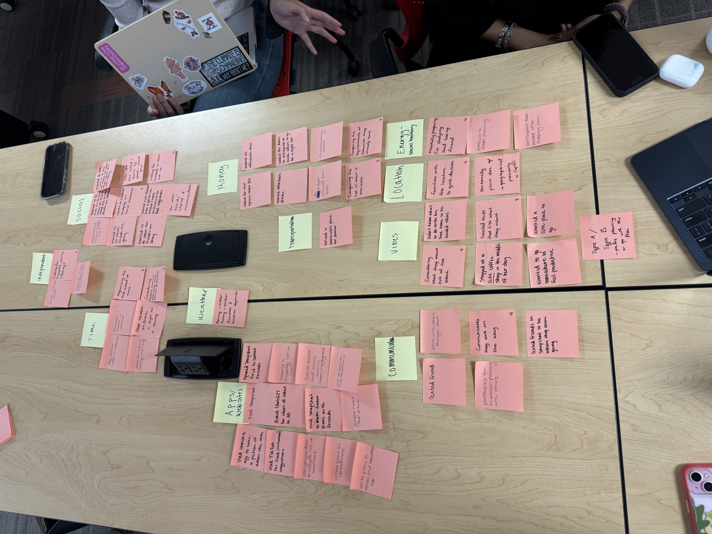

Selected Projects
A collection of my work exploring UX design, web development, and creative problem-solving. Through these projects, I have developed skills in user-centered design, research, and creating thoughtful digital experiences.
Personalized Activity Recommendation App
UX Design | Figma | In Progress
As part of a team project for LIS 470, I'm helping design a mobile app that recommends personalized activities based on users' interests, budgets, and social preferences. My individual contribution focuses on designing task flows, wireframes, and mockups that help users explore alternative recommendations when their suggestion doesn't for their needs.
Design Process
I began by developing task flows and low-fidelity wireframes to map out how users would navigate between recommendations. I then translated these ideas into higher-fidelity mockups using Figma, incorporating consistent typography, colors, navigation, and interactive elements.

Dance Through the Decades
Web Design & Development | LIS 351
Designed and developed a one page dance-themed website using HTML and CSS, incorporating visual hierarchy, typography, and consistent styling.
Focused on creating clear navigation, readable content, and an organized layout using CSS Flexbox.

View WebsiteAffinity Diagram & UX Research
User Research | Information Organization
Worked with a team to organize research observations into related themes using affinity diagramming.
This process helped identify patterns in user experiences and provided insights to inform design decisions.
